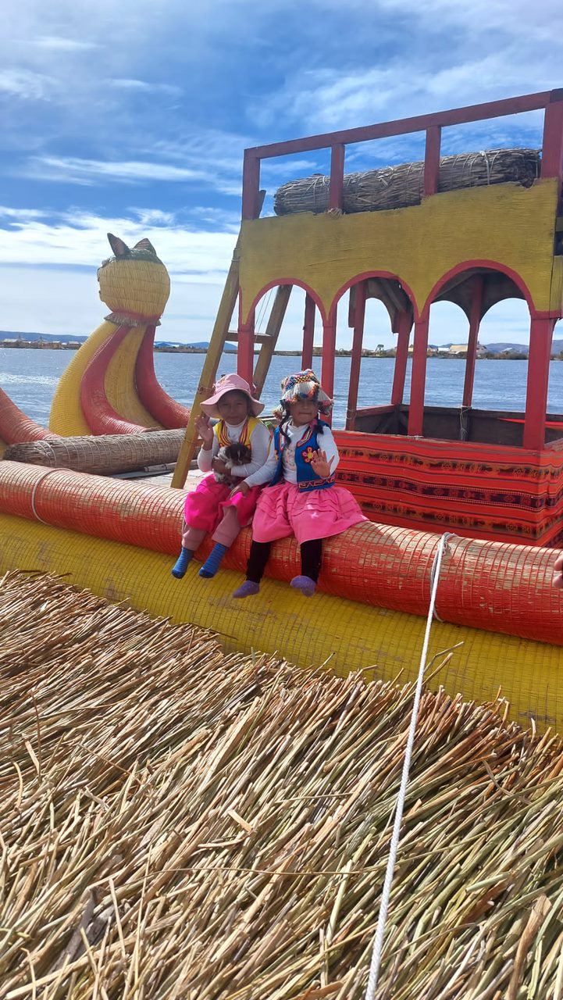

|
 |
פלא הנדסי על המים
מדינה: פרו | מיקום: אגם טיטיקקה האיים הצפים של בני האורוס הם פלא הנדסי עשוי קנים (טוטורה) הצפים על מימי אגם טיטיקקה, האגם הגבוה ביותר בעולם שניתן לשוט בו. הביקור באיים מאפשר הצצה לאורח חיים עתיק וייחודי, שבו הכל – מהבתים ועד הסירות – עשוי מאותם קנים מקומיים. חוויה תרבותית וצבעונית במיוחד. |
|||
|
||||